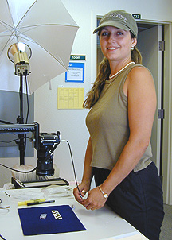

Artifact and Icon Photography
 Lab
Photography
Tech: Cara Davis has been a long-term volunteer and project
participant with the Alta California Mission Research Project at Old Mission
San Juan Bautista. In March of 1996, Cara began work as a project
assistant and field crew participant. Her familiarity with the archaeological
and ethnohistorical collections, and her background in photography and
collections management led to her selection as lab photographer for project-related
artifact and specimens collections. In this instance, Cara produced
digital images or lab portraits of Dr. Mendoza posed with archaeology tools
and equipment, as well as images of artifacts and specimens used in the
CD-ROM and online artifact database. Cara is here pictured using
a White Lightening portable strobe system and a Super Repro copy stand.
Text and Photographs Copyright
Ruben G. Mendoza, 2000
Main